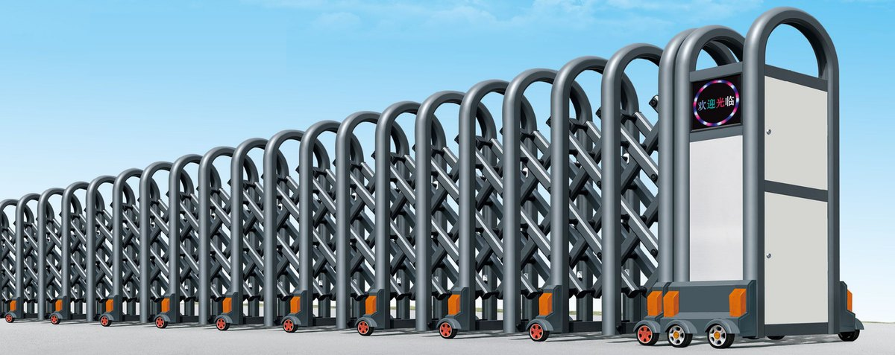
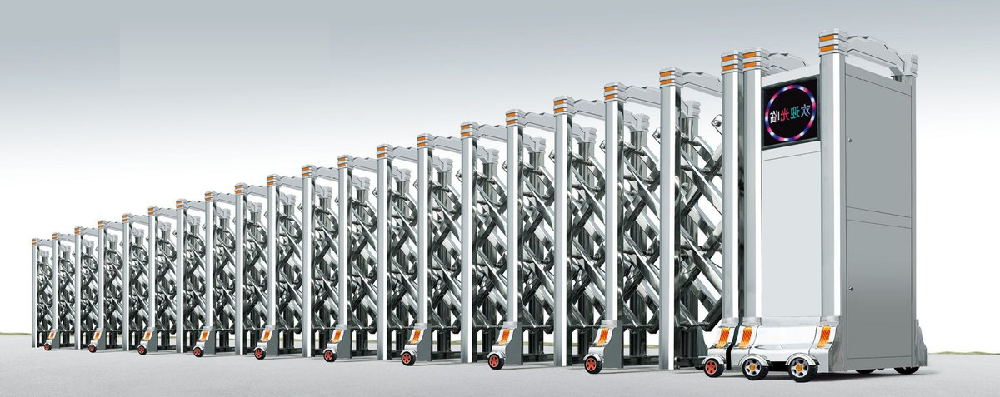

先判断：伸缩门适合什么入口
伸缩门是性价比最高的一类电动大门，但它有两个绕不过去的前提：门口要有机头位，地面要么能预埋导轨、要么足够平整。这两条不满足，再便宜的报价也装不顺。
| 现场情况 | 适合度 | 说明 |
|---|---|---|
| 企业大门、学校、园区主入口 | 适合 | 常规 4–15 m 洞口，样式多、造价可控、收放快 |
| 门口一侧有位置放机头 | 适合 | 机头约占 1 m 见方，还要留检修空间 |
| 洞口 20 m 以上 | 需对比 | 节数多、机头负荷大，建议同时比较悬浮门或段滑门 |
| 重载车辆频繁、地面易沉降 | 谨慎 | 地轨容易被压变形，优先考虑无轨或改悬浮门 |
| 强风口、沿海、迎风面开阔 | 需加固 | 门体高、节数多时抗风是短板，要加导杆、加密节距 |
| 只走人的小门 | 不建议 | 用平开门更合适，成本和维护都低 |
一樘伸缩门由哪些部分组成
伸缩门的钱差在门体节距、型材厚度、机头和导轨上，不在“外观像不像”。把这五部分问清楚，报价单就不会看糊涂。
① 门体
铝合金型材或不锈钢，靠平行四边形交叉铰接实现收放。型材壁厚、节距和交叉杆的销轴强度，决定门体收放是否顺畅、能用多久。
② 走轮与导轨
有轨：地面预埋导轨，走轮卡在轨内，直线度和抗风更好，但轨道槽会积灰积水。无轨：靠导向轮与磁导航，地面干净，但对平整度要求高。
③ 机头
电机、减速机、离合器、控制板都在机头里。机头是整樘门最贵的部件，也是后期维护的主要对象。
④ 控制
遥控、按钮、刷卡、车牌识别、道闸联动。园区入口常见的做法是伸缩门与道闸、识别相机联动，一套系统管车和门。
⑤ 安全装置
红外对射、遇阻停止、警示灯，防爬刺按需要选配。人车混行、儿童出入多的学校门口，这几项要配齐。
选型要问清楚的五件事
- 洞口净宽与收缩后长度——门体收进机头后还有多长，直接决定门口能不能停车。
- 门体高度与节距——常用 1.2–1.8 m；节距越小，收起来越紧凑，但节数更多。
- 有轨还是无轨——看地面能不能开槽、有没有重载车辆压过。
- 机头位置与电源——机头位、检修空间、220 V 电源与控制线管要提前留。
- 联动需求——车牌识别、道闸、值班室开关、消防信号，报价阶段定，后期加装成本高。
参数参考
| 项目 | 常规配置区间 | 说明 |
|---|---|---|
| 适用洞口宽 | 4–20 m | 超过 20 m 建议对比悬浮门或段滑门 |
| 门体高度 | 1.2–1.8 m | 图册各系列标注最佳高度 1200–1600 mm，厂区常用 1.6 m 左右 |
| 单节宽度（轮中） | 450–820 mm | 图册路障 1 号 450 mm，平安门 4 号 760 mm，富贵门 7 号 820 mm |
| 运行速度 | 0.2–0.35 m/s | 按门体长度与机头功率调整 |
| 驱动 | 220 V 单相电机，370–750 W | 长门体、重门体选大功率机头 |
| 材质 | 铝合金型材 / 不锈钢 | 铝合金轻、耐腐蚀；不锈钢更重，适合对外观要求高的门口 |
| 安全装置 | 红外对射、遇阻停止、警示灯 | 学校、人车混行入口建议配齐 |
安装前，现场要具备什么
- 机头位：门口一侧留出约 1 m 见方的机头位与检修空间，地面要能承重。
- 地面与导轨：有轨方案要预埋导轨并做混凝土基础；无轨方案要求地面平整、无大坡、无大面积破损。
- 电源：机头附近预留 220 V 电源和控制线管，室外要防雨。
- 排水：导轨槽最容易积灰积水，门口要有排水坡。
- 门柱与净空：门柱、围墙、雨棚不能与门体运行轨迹冲突。
维护：四件事按周期做
| 周期 | 做什么 | 为什么 |
|---|---|---|
| 每月 | 清理导轨槽与走轮杂物、试一遍收放 | 砂石卡在轨槽里是门体跑偏和异响的主因 |
| 每季度 | 走轮磨损检查、链条润滑、紧固件复紧 | 走轮磨偏以后，门体会越跑越歪 |
| 每半年 | 电机与离合器检查、红外与遇阻测试 | 离合是停电时唯一的手动手段，必须能动作 |
| 每年 | 门体防腐与型材检查、机头内部除尘 | 户外粉尘和雨水是机头故障的主要来源 |
产品图与现场



常见问题
有轨和无轨怎么选？
有轨是地面预埋导轨、走轮卡在轨内，直线度和抗风更好；无轨靠导向轮与磁导航，地面干净，适合已硬化、不能开槽的门口。重载车辆频繁、门口有坡的现场，地轨容易变形，建议先看无轨方案，或者直接比较悬浮门。
伸缩门能抗几级风？
门体越高、节数越多，迎风面越大。抗风靠型材截面、节距、导杆和机头扭矩一起支撑，不是单看型材厚度。沿海、山口、迎风口的项目要按当地基本风压核算，抗风压检测方法见 GB/T 7106-2019。
门体高度一般做多高？
常用 1.2–1.8 m。厂区主入口多为 1.6 m 左右，学校、园区可以做到 1.8 m；图册各系列标注的最佳高度在 1200–1600 mm 之间，具体按洞口宽度、门柱高度和是否需要防爬来定。
旧门能不能只换机头或门体？
多数情况可以，但要先核对节距、走轮间距和导轨规格是否匹配。我们会先看现场照片和原门尺寸，再判断是换机头、换门体还是整体更换，避免报了价到现场装不上。
参考标准
- JG/T 154-2013《电动伸缩围墙大门》（电动伸缩门产品标准）
- GB/T 7106-2019《建筑外门窗气密、水密、抗风压性能检测方法》
- GB/T 5226.1-2019《机械电气安全 机械电气设备 第1部分：通用技术条件》
本页更新于 2026-10-17。以上标准为产品选型与验收的通用依据，具体执行版本以项目所在地区现行有效版本为准。